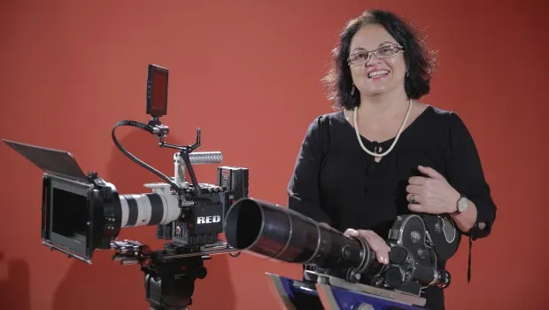

Jornal Opção: Rosa Berardo terá mostra com dois filmes inéditos e um restaurado
Cineasta paulista, radicada em Goiânia, apresentará três curtas-metragens no Cine Lumière Bougainville, que debaterão assuntos fundamentais para a sociedade nos dias de hoje, como liberdade, repressão, […]